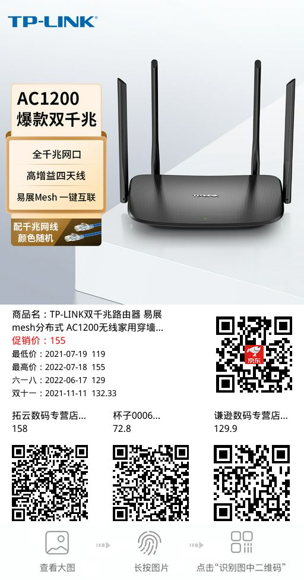
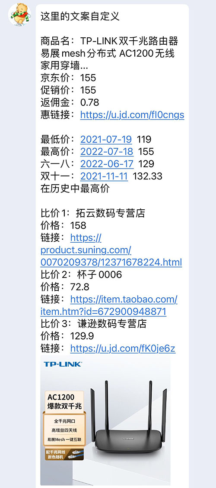
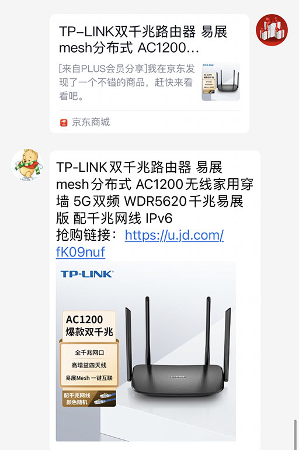
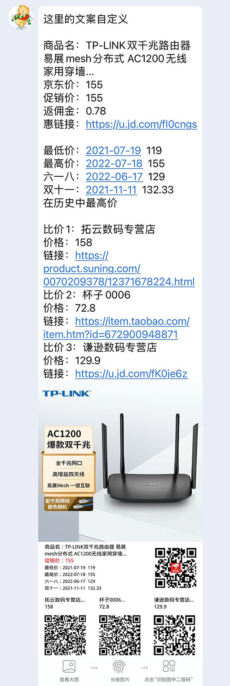
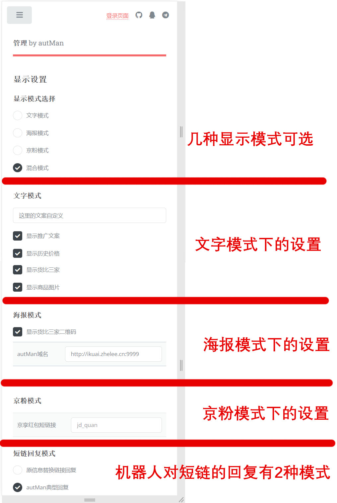

返利显示样式
1.海报模式
2.文字模式
3.京粉模式
4.混合模式
5.显示参数设置
6.显示模式的指令设置
0.文字模式
指令：文字模式
set fanli reply_mode 0
1.海报模式
指令：海报模式
set fanli reply_mode 1
2.京粉模式
指令：京粉模式
set fanli reply_mode 2
3.混合模式
指令：混合模式
set fanli reply_mode 3
显示内容
1.自定义文案
set fanli cstm_cont 美丽商品优惠购
指令：设置文案：美丽商品优惠购
2.显示自定义文案
set fanli show_cstm true/false
指令：显示自定义文案/关闭自定义文案
3.显示历史价格
set fanli show_lsjg true/false
指令：显示历史价格/关闭历史价格
4.显示货比3家
set fanli show_hb3j true/false
指令：显示货比3家/关闭货比3家
5.显示图片
set fanli show_pict true/false
指令：显示图片/关闭图片
6.显示几张图片
set fanli show_pict_num 1/2/3/4/5
海报设置
set fanli host_name http://ikuai.zhelee.cn:9999
(说明：autMan域名+autMan端口,确保公网可以访问此地址)
京粉模式
显示模式之京粉模式（京东红包）
进入京东联盟->我的推广->京享红包推广->获取无线推广链接
set fanli jd_quan https://u.jd.com/PdOTAgr